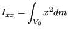

Keyword type: step
This option is used to print selected element variables in an ASCII file with the name jobname.dat. Some of the element variables are printed in the integration points, some are whole element variables. The following variables can be selected:
|  | (733) |
and similar for the other expressions. If TOTALS=YES or TOTALS=ONLY is selected the center of gravity and the mass moments of inertia about the global axes through the center of gravity are calculated too (key=EMAS).
The keys ENER and ELSE trigger the calculation of the internal energy. If they are absent no internal energy is calculated. Since in nonlinear calculations the internal energy at any time depends on the accumulated energy at all previous times, the selection of ENER and/or ELSE in nonlinear calculations (geometric or material nonlinearities) must be made in the first step.
There are six parameters, ELSET, FREQUENCY, FREQUENCYF, TOTALS, GLOBAL and TIME POINTS. The parameter ELSET is required, defining the set of elements for which these stresses should be printed. If this card is omitted, no values are printed. Several *EL PRINT cards can be used within one and the same step.
The parameters FREQUENCY and TIME POINTS are mutually exclusive.
The FREQUENCY parameter is optional and applies to nonlinear calculations where a step can consist of several increments. Default is FREQUENCY=1, which indicates that the results of all increments will be stored. FREQUENCY=N with N an integer indicates that the results of every Nth increment will be stored. The final results of a step are always stored. If you only want the final results, choose N very big. The value of N applies to *OUTPUT,*ELEMENT OUTPUT, *EL FILE, *ELPRINT, *NODE OUTPUT, *NODE FILE, *NODE PRINT, *SECTION PRINT,*CONTACT OUTPUT, *CONTACT FILE and *CONTACT PRINT. If the FREQUENCY parameter is used for more than one of these keywords with conflicting values of N, the last value applies to all. A frequency parameter stays active across several steps until it is overwritten by another FREQUENCY value or the TIME POINTS parameter.
The 3D fluid analogue of FREQUENCY is FREQUENCYF. In coupled calculations FREQUENCY applies to the thermomechanical output, FREQUENCYF to the 3D fluid output.
The optional parameter TOTALS only applies to whole element variables. If TOTALS=YES the sum of the variables for the whole element set is printed in addition to their value for each element in the set separately. If TOTALS=ONLY is selected the sum is printed but the individual element contributions are not. If TOTALS=NO (default) the individual contributions are printed, but their sum is not.
With the parameter GLOBAL (optional) you tell the program whether you would like the results in the global rectangular coordinate system or in the local element system. If an *ORIENTATION card is applied to the element at stake, this card defines the local system. If no *ORIENTATION card is applied to the element, the local system coincides with the global rectangular system. Default value for the GLOBAL parameter is GLOBAL=NO, which means that the results are stored in the local system. If you prefer the results in the global system, specify GLOBAL=YES. If the results are stored in the local system the first 10 characters of the name of the applicable orientation are listed at the end of the line.
With the parameter TIME POINTS a time point sequence can be referenced, defined by a *TIME POINTS keyword. In that case, output will be provided for all time points of the sequence within the step and additionally at the end of the step. No other output will be stored and the FREQUENCY parameter is not taken into account. Within a step only one time point sequence can be active. If more than one is specified, the last one defined on any of the keyword cards *NODE FILE, *EL FILE, *NODE PRINT, *EL PRINT or *SECTION PRINT will be active. The TIME POINTS option should not be used together with the DIRECT option on the procedure card. The TIME POINTS parameters stays active across several steps until it is replaced by another TIME POINTS value or the FREQUENCY parameter.
The first occurrence of an *EL FILE keyword card within a step wipes out all previous element variable selections for print output. If no *EL FILE card is used within a step the selections of the previous step apply, if any.
First line:
Example: *EL PRINT,ELSET=Copper E
requests to store the strains at the integration points in the elements of set Copper in the .dat file.
Example files: beampt, beamrb, beamt4.